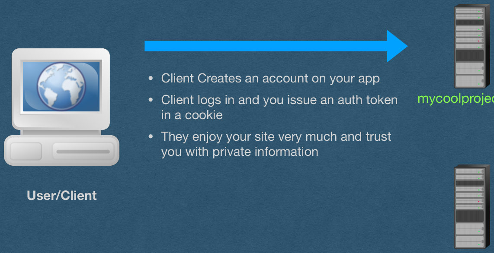
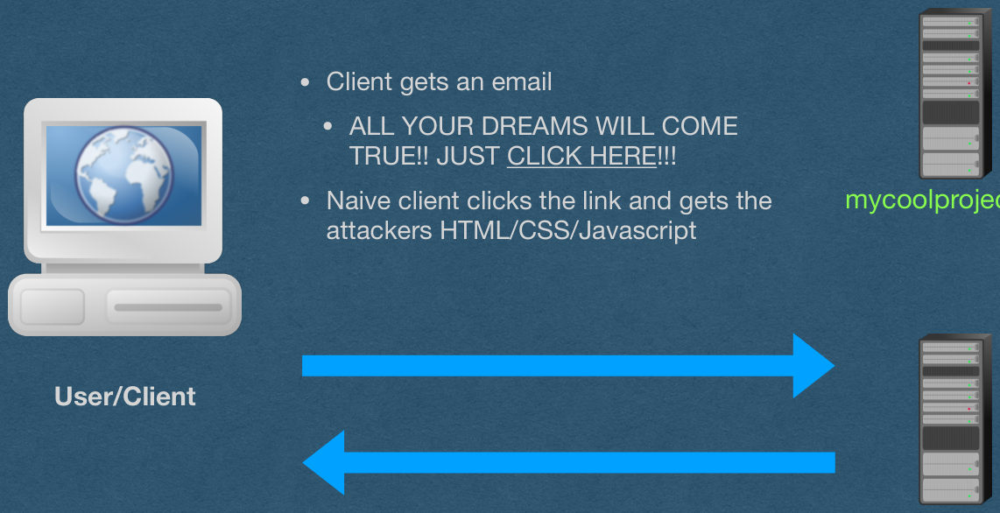
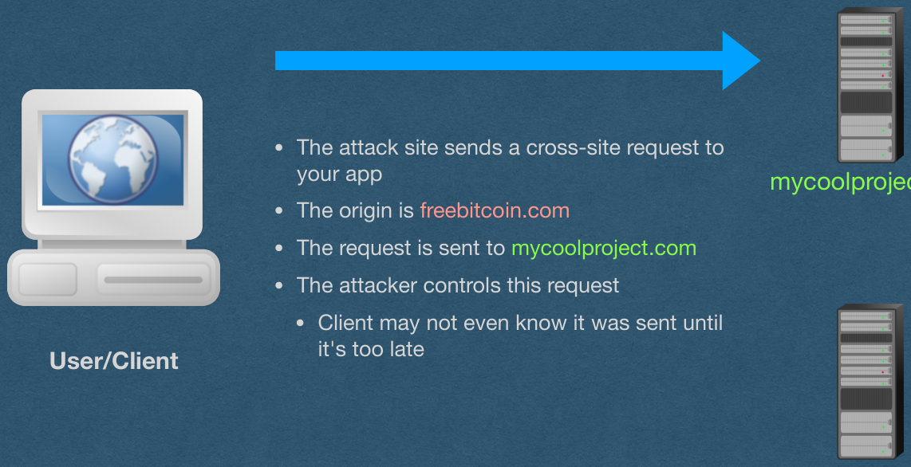
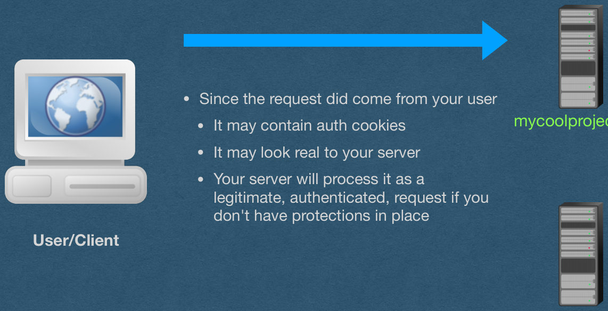
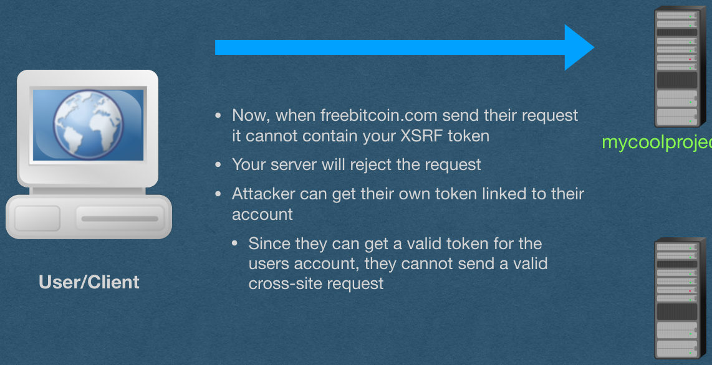

XSRF
CSE312 — Web Development
XSRF
Cross-Site Request Forgery
XSRF
- Cross-Site Request Forgery
- A request that is sent from a different “origin”
- Origin:
- The combination of protocol, host, and port
- If all three do not match, it is a cross-site request
- What’s the danger?
XSRF - Example
Potential outcomes:
- An attack page can make a request to AutoLab
- Requests your grades
- Makes a submission on your behalf
- Attack page makes a request to your bank and transfers your funds to the attacker’s account
- Attack page makes embarrassing posts on social media
XSRF
- We have a form that sends authenticated POST requests to our server
- You host this app at mycoolproject.com
- The format of these POST requests is known (Anyone can visit and view your front end)
- An attacker makes their own web app
- The app will send a POST request to mycoolproject.com in the proper format
- They host this app at freebitcoin.com and get someone to goto their site
- The site sends the POST request on behalf of the user -> Hacked!
XSRF
- Client Creates an account on your app
- Client logs in and you issue an auth token in a cookie
- They enjoy your site very much and trust you with private information
mycoolproject.com
User/Client
freebitcoin.com

XSRF
- Client gets an email
- ALL YOUR DREAMS WILL COME TRUE!! JUST CLICK HERE!!!
- Naive client clicks the link and gets the attackers HTML/CSS/Javascript
mycoolproject.com
User/Client
freebitcoin.com

XSRF
- The attack site sends a cross-site request to your app
- The origin is freebitcoin.com
- The request is sent to mycoolproject.com
- The attacker controls this request
- Client may not even know it was sent until it’s too late
mycoolproject.com
User/Client
freebitcoin.com

XSRF
- Since the request did come from your user
- It may contain auth cookies
- It may look real to your server
- Your server will process it as a legitimate, authenticated, request if you don’t have protections in place
mycoolproject.com
User/Client
freebitcoin.com

XSRF
- How to send a XSRF attack?
- As the src of an image
- Can send a GET request
- If your server uses query strings, these can be set by the attacker
- Easy to setup. Embed an image in an email
- Client only has to open the email (Doesn’t even require them to click a shady link)
- This is why images are often blocked in email
- Can send a GET request
XSRF
- How to send a XSRF attack?
- Submit an HTML form
- Get the user to navigate to your page
- The page automatically submits and HTML form on their behalf (They don’t have to click a button. Send it with JS)
- The user will be navigated to the site that was attacked
- Can send GET and POST requests
- Must follow specific encodings supported by HTML forms
- Attacker cannot see the response of the request (No stealing private data with this method)
XSRF
- How to send a XSRF attack?
- Make an AJAX request
- Get the user to navigate to your page
- Page automatically sends an AJAX request, or several, onload
- Attacker has full control
- They can read the responses and have multiple interactions with the attacked site
- They can use any HTTP method
- They can put anything in the body of the requests
How do we protect against XSRF attacks?
Referrer?
- Every request should have a referrer header
- Specifies the origin of the request
- If the referrer doesn’t match your app
- Deny the request
- Simple enough
- Unfortunately, the referrer can be spoofed and must not be relied upon for security reasons
SOP
- Same-Origin Policy (SOP)
- The SOP is implemented in modern browsers and blocks many cross-origin requests by default
- All AJAX responses are blocked by the SOP
- This is a relief since AJAX is so powerful
SOP
- The SOP does NOT block “safe” requests
- Safe requests include
- Any GET request
- Any request that navigates away from the origin (Including HTML Form submissions using POST)
- A GET request should be idempotent AND not change the state of the server
- Your GET requests should only retrieve data since they are not protected by CORS
Slide 16
SOP
- The SOP does NOT block “safe” requests
- HTML form submissions are more difficult to protect against since they can make POST requests
- We need better protections
SOP Limitations
- Since the SOP is enforced by the browser, we have limited control over its enforcement
- What if a user has a very outdated browser that doesn’t implement the SOP?
- What if the user installed a plug-in that disables the SOP?
- What if the user is using an obscure browser that does not implement the SOP properly?
- The SOP will protect most users, but not 100%
- And won’t protect any users from a GET or HTML form attack
Slide 19
XSRF - Tokens
- Let’s add server-side protection from XSRF attacks
- Will work for all users and all XSRF attacks
XSRF - Tokens
- On the Server:
- Generate a long random XSRF token on page load (Attacker must not be able to guess the token)
- Embed this XSRF token in the page
- Store this XSRF token as being sent to this user
- In the browser:
- XSRF token can be a hidden input on the form
- Send this XSRF token along with form submissions
XSRF - Tokens
- Back to the Server on HTTP requests:
- Read the XSRF token value and the auth token from the request
- Authenticate the user based on their auth token
- Verify that this XSRF token was sent to this user
- If the XSRF token was issues to this user
- Accept the request as valid
- If the XSRF token was NOT issued to this user
- This is an invalid request and might be a XSRF attack
XSRF Token
- Add a new input to your form for the token
- Generate and inject the token as a value using HTML templates
- Add the hidden attribute so the token is not displayed to the user
- Read the token from the request and verify
<form action="/image-upload" id="image-form" method="post" enctype="multipart/form-data">
<input value="AQAAAjppCA8mhugn2UvwOTaKnVY" name="xsrf_token" hidden>
<label for="form-file">Image: </label>
<input id="form-file" type="file" name="upload">
<br/>
<label for="image-form-name">Caption: </label>
<input id="image-form-name" type="text" name="name">
<input type="submit" value="Submit">
</form>XSRF
- Now, when freebitcoin.com send their request it cannot contain your XSRF token
- Your server will reject the request
- Attacker can get their own token linked to their account
- Since they can get a valid token for the users account, they cannot send a valid cross-site request
mycoolproject.com
User/Client
freebitcoin.com

CORS
- The SOP can be too restrictive is some cases
- eg. You host an API that is consumed by other apps via AJAX
- Cross-Origin Resource Sharing
- A policy that lets you relax the SOP
- Can explicitly allow cross-origin requests with the header:
Access-Control-Allow-Origin: *
CORS
- The * is a wildcard that allows all cross-site requests
- It is very dangerous and exposes you to XSRF attacks
- Can specify specific origins as well
- Common if you have an app with multiple servers
Access-Control-Allow-Origin: cse312.com
Slide 26
CORS
- CORS determines which cross-origin requests are allowed and which are blocked
- By default, browsers will block many cross-origin requests
Access-Control-Allow-Origin: *